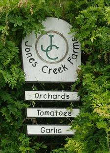
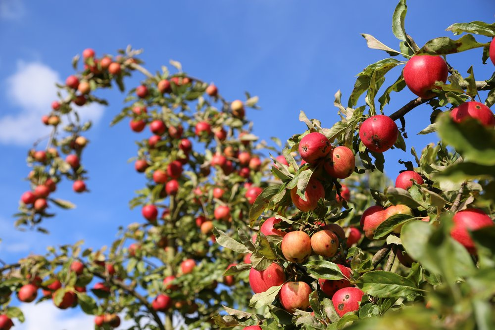

Jones Creek Farms offers more than 50 varieties of u-pick apples from August to October. The 2019 apple picking season is scheduled to kick off Aug. 9-12 and is likely to go through the end of October
 One of the largest apple orchards in Western Washington, Bellewood offers u-pick apples, cider press visits, a country cafe, and an apple themed gift shop.They carry 21 apple varietyes as well as other produce.